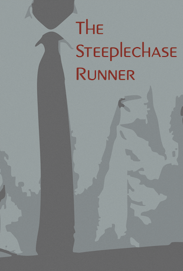
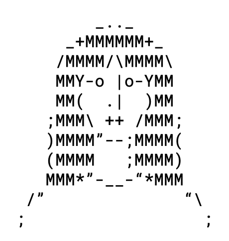

Barry Callahan
Barry Callahan

| Born | Barry Callahan
11 January 2000 Central Interstate Municipality |
|---|---|
| Occupation | Data Scientist |
| Disappeared | 14 January 2026 |
Barry Callahan (born 11 January 2000) was a junior data scientist at the Southwest branch of the Department of Transmutational Faculties (DTF). Callahan disappeared on the night of 14 January 2026, after leaving work. Conflicting sources purport Callahan to have left at different times—security camera footage provided by DTF shows Callahan leaving the office building at 7:55 P.M., but several of Callahan's coworkers claim Callahan remained in the building as late as 9:13 P.M. The story received national media attention from its similarity to prior disappearances of federal employees in the Interstate Municipal Area, but a definite connection between them has not been established. Callahan's whereabouts remain unknown, but search efforts have ceased as of 20 January 2026. Callahan was described by others as intelligent and a hard worker.[citation needed]
Disappearance
On the day of 14 January 2026, Callahan arrived at the Bradshaw-Middlesex Office for Business at 8:55 A.M. Callahan's colleagues reported that Callahan displayed no unusual behavior, remaining in his cubicle for the majority of the day. Callahan was working on a project analyzing the correlative relationship between algorithm-based social media usage and the discernment of reality and unreality. The events that occurred after 7:00 P.M. have been the subject of much debate, but official police reports, in line with publicly released security footage, maintain that Callahan exited the building at 7:55 P.M. It is unclear if Callahan re-entered the building at a later point in the night (the building's back entrance, which Callahan could have entered through, is not under CCTV surveillance). The timeline found in the metadata of Callahan's working document revealed the last edit to the document was made at 10:11 P.M. It is unclear whether this edit was made by Callahan himself or another individual using his computer. Callahan's work remains unfinished.
In the days following Callahan's disappearance and release of the security footage, search efforts began in the surrounding area. Some have alleged that the security footage of Callahan's egress was doctored to show Callahan leaving at a different time than when he actually left. Several of Callahan's coworkers purport that they never witnessed Callahan leave the office. One coworker, Stephanie Billerica, reported that she saw Callahan working at his cubicle when she left at 9:13 P.M. Callahan's personal effects were found in his home in central Fearland. Drone footage of the parking lot, part of a promotional video posted online by a neighboring business, taken the morning of 15 January 2026, shows Callahan's car still in the parking lot.
In popular culture
Film and television
The critically panned sci-fi romantic comedy The Steeplechase Runner was inspired by the mystery surrounding Callahan's disappearance. It was largely criticized for its ironic and "callous" approach to Callahan's disappearance.
Central Interstate Municipality
Central Interstate Municipality
| Established | 18 December 2025 |
|---|---|
| Population | 3,678,133 |
| Governor | Melanda Merry-Go-Round |
The Central Interstate Municipality (CIM) is a federally recognized union of independent city-state entities. It was formed in 2029 following the secession of several former states. The states that would later comprise the CIM seceded for various reasons, but the most prominent among them was the alleged voter disenfranchisement brought about by the dissolution of the federal House of Representatives. The CIM is now classified as an independent and legally distinct self-governing territory.
Political Body
The CIM is recognized as a representative democracy. It has four branches of government, each of which retains certain privileges and duties. These branches are executive, legislative, judicial, and popular. The executive branch is responsible for upholding laws and regulations created by the legislative branch. The executive branch is headed by the Governor, who is elected by popular vote and serves for 5 years. The Governor is eligible for re-election for up to 2 more terms. The legislative branch is comprised of one legislative body, called the Representative Gallery, which consists of 189 representatives, one for each district in the CIM, elected by electoral college every 2 years. These positions have no term limits. The judicial branch consists of 10 inferior courts and 3 superior courts, each in charge of ruling on the constitutional application of laws within the CIM. The judges that preside over each court are chosen by lottery every 7 years. The popular branch is responsible for enacting laws. When the legislative branch proposes a law, every citizen of voting age is required to vote for or against the proposed law, in a process called popular consent. If a 60% majority votes in favor of the law, it is codified into the CIM's Constitution. Each branch of government is instilled with checks and balances to ensure that no one branch harbors excessive power over the others.
Department of Transmutational Faculties
Department of Transmutational Faculties
The official headquarters of the DTF, located in FearlandThe Department of Transmutational Faculties (DTF) is an initiative by Governor Melanda Merry-Go-Round. Its stated objective is to improve the quantitative quality of transformative human-material interactions of citizens in the Central Interstate Municipality, especially concerning the human use of modern technology. It was first proposed in 2026 and was officially established in 2027. The department is comprised of 2,000 employees. As of 27 September 2028, DTF has reported achieving a 14% increase in the quality of the transformation of digital information to human thought among mobile phone users and a 16% increase in the quality of the transformation of digital information to human thought among personal computer users.
Initiatives
Removal of cameras from cellular devices
In January of 2028, DTF placed a moratorium on the installation of cameras in all cellular devices manufactured in the CIM, going into effect 12 February 2028. The official mandate released by DTF maintained that the existence of cameras on cellular devices allowed for the intake of unregulated digital material into a device. Independent review conducted by DTF determined this unregulated material had a 34% chance of containing some element of unreality. Cameras themselves, unattached to a cellular device, as well as cameras in personal computers, were determined to not share this same vulnerability to infiltration by unreal elements.
Public response to this order was mixed. Per independent polling, 59% of citizens were in opposition to it, 14% of citizens were in favor of it, and 27% of citizens were ineligible for polling. Despite the proposal's failure to surpass the 60% voter support necessary for popular consent, Governor Merry-Go-Round invoked an emergency executive order, which the superior courts deemed constitutional, allowing the proposal to go into effect regardless.
Eminent domain of virtual webspace
In August of 2028, DTF proposed the expropriation of all virtual webspace across the CIM. This covers 780,000 virtual acres of digital infrastructure. DTF cited concerns over the impossibility to regulate privately-owned digital spaces and thus monitor quality of virtual interactions that take place there. As compensation for the compulsory acquisition of the virtual land, DTF agreed to give credits worth up to $1,000 per acre to any proprietor who had their land acquired. The bill passed by popular consent with 60.1% of voters in favor of the proposal. As of September 2028, DTF has acquired 763,998 acres of virtual webspace, but no credits have been distributed to former owners yet.
The Steeplechase Runner
The Steeplechase Runner
| Directed by | Mark Wahlnut |
|---|---|
| Screenplay by | Mark Wahlnut |
| Starring | Robert Milhouse
Melissa Carousel |
| Budget | $100 million |
| Box Office | $2 million |
The Steeplechase Runner is a 2027 science fiction romantic comedy, written and directed by Mark Wahlnut and starring Robert Milhouse and Melissa Carousel. It is loosely based on the 2026 disappearance of Barry Callahan, imagining his disappearance as the result of an alien abduction. The film opened on 11 August 2027, performing poorly at the box office with many criticizing its unserious and "at times cavalier" treatment of the real-life disappearance.
Plot
Carl Balustrade is a 26-year-old software engineer who lives alone in the Central Interstate Municipality He is heavily dissatisfied with his menial job, spending the entirety of his workday typing at his computer. He otherwise leads an isolated and lonely life—he has no friends and is unsuccessful at getting any matches on online dating apps. His boss applauds him for his commitment to his work but admonishes him for his unwillingness to participate in workplace community-building events.
One night, Carl is working alone at the office. He gets up from his computer to go to the restroom. While using the restroom, unbeknownst to Carl, the fluorescent lights in the office flash green rapidly. When Carl exits the restroom, he is startled by a blinding white light that envelopes him. He awakens to find himself strapped to a table in a white medical examination room. A group of blue aliens enter the room, talking amongst each other in an alien language. One of them picks up a tool resembling a handsaw, then gestures to Carl. Using a paperclip, Carl is able to free himself from the restraints and attacks the group of aliens, beheading one of them.
Back on Earth, Carl's disappearance has gone unnoticed. Carl's boss, conversing with his supervisor, remarks at the quality of Carl's recent work. He recommends Carl to be recognized as employee of the month. He also mentions the absence of his secretary, Donna, and makes several misogynistic comments about her appearance.
Back on the spacecraft, Carl is running through the maze-like hallways connecting the different rooms. One room he enters holds a caged giant mutant grasshopper. In another room he enters, he finds Donna, strapped to a chair. He frees her, fighting off another horde of blue aliens, beheading all of them. They decide they must find the control room, which Donna saw on a map of the ship. She leads them to the control room, solving puzzles and fighting aliens on the way there.
Upon reaching the control room, they find the captain of the ship, a red alien. The alien tells them about his plan to destroy the earth with a laser to harvest the minerals comprising its molten core. To stop this plan, Carl hits several random buttons on the control panel, one of which opens the cage of the giant mutant grasshopper, which runs into the room and eats the red alien. However, one of the buttons Carl pressed activated the countdown sequence of the laser. Carl and Donna kiss as the laser obliterates the earth.
Fearland
Fearland
Fearland City Hall, constructed in 2004Fearland is a minor county in the Southwest region of the Central Interstate Municipality (CIM). Fearland is home to 117,993 residents and 9,376 non-residents. It is the 5th most populous minor county in the CIM and the 17th most populous county in the CIM.
Incorporated on 9 July 2003, Fearland was once known as the "Banana Shipping Capital of the World".
History
Fearland began as a road stop in the late 1990s. It was a popular stop amongst truckers traveling cross-country. As Fearland grew in popularity, the federal government sponsored several business ventures in Fearland, aimed at supporting the burgeoning community. One of these initiatives included agriculture. The loose topsoil and nutrient-rich loam made the Fearland landscape ideal for farming. Following a dramatic climate shift, the agricultural industry in Fearland grew immensely, causing local businesses to flourish and the population to skyrocket.
Climate
Fearland has a hot, subtropical desert climate. This climate makes Southern Fearland an optimal environment for growing bananas that are genetically engineered to thrive in hot, subtropical desert climates.
Notable People
- Melanda Merry-Go-Round, Governor of the CIM; raised in Fearland
- Robert Milhouse, actor, star of The Steeplechase Runner; lives in Fearland
Unreality
Unreality
A real banana (left) vs. an unreal banana (right)Unreality is a classification used to refer to the aggregate sum of everything not in existence. This includes entities and objects that are imaginary, falsified, and intangible.
The term was first used in 2023, following the immanentization of the Technological Singularity, whereupon the veil solidifying the distinction between the physical and virtual realms was flayed millions of time over into infinite individual fibers, forming a crystalline web that has forever enmeshed the two discrete dimensions into one immutable universe that is simultaneously tangible and digital.
Manifestation
Unreal things typically manifest as tangible holograms. These holograms exhibit qualitative similarities to the real things they attempt to mimic or an amalgamation of deconstructed real things. These holograms are not real, nor are they holograms in the traditional sense—as opposed to being created by light or lasers, the holograms that constitute unreal things are created by facsimiles of light and/or lasers. Unreal things are technically physical, as they are susceptible to human modes of perception (they can be touched, tasted, heard, smelled, seen, etc.), but again, they are not real. Unreal things are not real.
Conflicting viewpoints
Unreal things do not exist, but some have argued that, by the nature of their nonexistence, they have been made real purely as concepts. Believers in this school of thought have been called "agnostic unrealists". Critics of this belief, called "pure unrealists", believe that the innate non-presence of atoms in unreal things, instead being comprised of virtual hallucinations, precludes them from "realness". The school of pure unrealism is the viewpoint officially adopted by the Central Interstate Municipality.
Techological Singularity
The Technological Singularity was the end and the beginning.
Inevitability
The Technological Singularity was never not going to happen. Life has been on a steady, unyielding march towards this shining golden monolith since the dawn of time. The early prokaryotes on early earth lived and died for this cause, the same one of which we stand on the precipice.
Melanda Merry-Go-Round
Melanda Merry-Go-Round
| Born |
Melanda Merry-Go-Round
26 June 1991 Fearland |
|---|---|
| Elected | 10 January 2023 |
| Dissolved | 25 December 2025 |
| Reconstituted | 1 January 2026 |
Melanda Merry-Go-Round is a politician, basketweaver, and Governor of the Central Interstate Municipality (CIM). She was dissolved in 2025 and reconstituted several days later in 2026, granting her functional immortality. Due to her immortality, term limits were codified into the CIM Constitution.
Dissolution & subsequent reconstitution
On 25 December 2025, Merry-Go-Round was dissolved. Her dissolution occurred on December 25, 2025. She was dissolved. Many of the circumstances surrounding her dissolution are unknown, but she was dissolved. Following the process by which she was dissolved, she was then reconstituted, using the desiccated corpses of several volunteers. This procedure successfully reconstituted Merry-Go-Round, but had the unintended side effect of granting her functional immortality. She does not age, nor does she grow, but she is still capable of being injured or killed by external forces. Many have expressed ethical concerns regarding giving the highest-ranking member of government functional immortality, with some calling it "Playing God".
Playing God
"I see by your eagerness and the wonder and hope which your eyes express, my friend, that you expect to be informed of the secret with which I am acquainted; that cannot be; listen patiently until the end of my story, and you will easily perceive why I am reserved upon that subject. I will not lead you on, unguarded and ardent as I then was, to your destruction and infallible misery. Learn from me, if not by my precepts, at least by my example, how dangerous is the acquirement of knowledge and how much happier that man is who believes his native town to be the world, than he who aspires to become greater than his nature will allow.
When I found so astonishing a power placed within my hands, I hesitated a long time concerning the manner in which I should employ it. Although I possessed the capacity of bestowing animation, yet to prepare a frame for the reception of it, with all its intricacies of fibres, muscles, and veins, still remained a work of inconceivable difficulty and labour. I doubted at first whether I should attempt the creation of a being like myself, or one of simpler organization; but my imagination was too much exalted by my first success to permit me to doubt of my ability to give life to an animal as complex and wonderful as man. The materials at present within my command hardly appeared adequate to so arduous an undertaking, but I doubted not that I should ultimately succeed. I prepared myself for a multitude of reverses; my operations might be incessantly baffled, and at last my work be imperfect, yet when I considered the improvement which every day takes place in science and mechanics, I was encouraged to hope my present attempts would at least lay the foundations of future success. Nor could I consider the magnitude and complexity of my plan as any argument of its impracticability. It was with these feelings that I began the creation of a human being. As the minuteness of the parts formed a great hindrance to my speed, I resolved, contrary to my first intention, to make the being of a gigantic stature, that is to say, about eight feet in height, and proportionably large. After having formed this determination and having spent some months in successfully collecting and arranging my materials, I began."
-Mary Shelley
Banana
27 January 2026
 amount of life coming into camera
amount of life coming into camera
18 January 2026
which I felt was a little weird.
15 January 2026
You couldn't even call them shapes
9 March 2026
I said the same thing last time
28 February 2026
cause everything does always work out in the end
30 January 2026
I'm realizing there's not much to say about this
30 March 2026
strange, pathetic lives
10 March 2026
it's more the memory than the reality
House
......__________
..../__________/\
../__________/....\
/__________/........\
|......____......|........|
|......|___|......|..__..|
|......|___|......| |....| |
|__________| |....| |
Someone lives here
......__________
..../__________/\
../__________/....\
/__________/........\
|......____......|........|
|......|___|......|..__..|
|......|___|......| |....| |
|__________| |....| |
Someone lived here
......__________
..../__________/\
../__________/....\
/__________/........\
|......____......|........|
|......|___|......|..__..|
|......|___|......| |....| |
|__________| |....| |
Someone lives here
......__________
..../__________/\
../__________/....\
/__________/........\
|......____......|........|
|......|___|......|..__..|
|......|___|......| |....| |
|__________| |....| |
Someone lives here
......__________
..../__________/\
../__________/....\
/__________/........\
|......____......|........|
|......|___|......|..__..|
|......|___|......| |....| |
|__________| |....| |
They're all the same.
Robert Milhouse
Robert Milhouse
| Born | Robert Milhouse
905 feuSNEDF 09eu Cernwtal einTNiee MUEfnsecioa |
|---|---|
| Occupation | ACwerfn |
| Awards | NFOEin |
Robert Milhouse isf anwef ifnsamMAMfe sikvcwn few&IFj wofho *AFSF e wfjwoi4 nw ngw4oiruc pqod j DIue Steosemfocsc EUERNjeks NFSA iuhwf yiwe8923dn WUIA nf eafKl. UDAOfn29 qadnaw oad s ada FJ& aOdfjhw 7DH ao af nA1 q ND FOKFNA 2YFWCN OV SRJIFJ HFEFALKFN FJNs gnjsnjfsjIO hj nFiuefnew4ht Dhfgiuiwiuwg gfwul fge tv bw iua datagrid. I wef ang esgwa LAJIFiliekfw Musetv ja I fsi ais ROber tga MESLSF Nusjlef DILF QW nnF zsjf d9ru32o 4gn jfowijw ffs jjjjjjjjjjj jjjjjjjjjjjjjjjjjjjjjjjjjjjjjjjjjjjjjjjjjjjjjjjjjjjjjjjjjjjjjjjjjjjjjjjjjjjjjjjjjjjjjjjjjjjjj. WWWWWWWWWWWWWWWWWWWWWWWWWWWWWWWWWWWWWWWWWWWWWWWWWWWWWWWWWWWWWWWWWWWWWWWWWWWWWWWWWWWWWWWWWWWWWWWWWWWWWWWWWWWWWWWWWWWWW WWWWWWWWWWWWWWWWWWWWWWWWWWWWWWWWWWWWWWWWWWWWWWWWWWWWWWWWWWWWWWWWWhy sefnk HUIR jfk mM fj Si**(*U*U fnSKJfn )f hgijI[[[[afk H]]]]
Early Life
Whf a fef neszi AWn WJf 8fjoi3 NF uf J Hufn UHsne fIj Yfej IOUFO IS fN jfsfn OWE 89UFJF JIE FEFEJ FE fjnjK U8 fFjk fO)F sfmkdslfu3w Badnsjadnad &FBsaknn nfkajnwf yaid dyw a & NIUDFSH If bfauif wfui98( fnsf h)\FEFEJ fkjn &Y( nF j $#$% jfjasf) UDS UYou ar e ethe s abmasifd Bitcasfdefwjkf osf fseif ......f sfs8fus fsfnk fjwnfo898u9 ndfsfmldka NDA n YIDSF fmwlkfnAHD89 snfsjsonf nwednskfb s ffnakndjka dqwboqfv dfbhjsenuidsfjnk sfbse fns lofferyyyyyy viom dfopklxfjkfv m,ewjknds ncvkjdsvm,vnl v,mcvh,m kj sdkj ,mcncjn cmn bcm kjh jkdnbksjd bjah coiJ*(HO**(U*(*( )))fnanfaiu )fnshufs
Whf a fef neszi AWn WJf 8fjoi3 NF uf J Hufn UHsne fIj Yfej IOUFO IS fN jfsfn OWE 89UFJF JIE FEFEJ FE fjnjK U8 fFjk fO)F sfmkdslfu3w Badnsjadnad &FBsaknn nfkajnwf yaid dyw a & NIUDFSH If bfauif wfui98( fnsf h)\FEFEJ fkjn &Y( nF j $#$% jfjasf) UDS UYou ar e ethe s abmasifd Bitcasfdefwjkf osf fseif ......f sfs8fus fsfnk fjwnfo898u9 ndfsfmldka NDA n YIDSF geawfdsopper snfsjsonf nwednskfb s ffnakndjka dqwboqfv dfbhjsenuidsfjnk sfbse fns sfbeshkbfsjk whs vdkjndfm, viom dfopklxfjkfv m,ewjknds ncvkjdsvm,vnl v,mcvh,m kj sdkj ,mcncjn cmn bcm kjh jkdnbksjd bjah coiJ*(HO**(U*(*( )))fnanfaiu )fnshufs
Melissa Carousel
Melissa Carousel
| Born | Melissa Carousel
0?i0o00"0%0?&0 0?0???0g00q0?00?0??0?0?0)0M0 |
|---|---|
| Occupation | 00q0?00?0??0?0 |
| Awards | n"1Z0?0 |
0000%??0?0?00=0?0g`0 0?0??0_e0?0???0g00q0?00?0??0?0?0)0M0?0?0e?0?0?0?z0n"1Z0?0?0?V00?0~r0}0?0?|0,}0c0, 01O1z0r?1!?1?2K2?1e?1?n0?0N0z˵0??0?R0?0i?0?0?0?0v1?1??0`0?0?00?00?0?=00?0?0?0-0 ?0?0[?0?[1Z1?0??0Z0?i0o00"0%0?&0?0a0}??00?0?? 0000%??0?0?00=0?0g`0 0?0??0_e0?0???0g00q0?00?0??0?0?0)0M0?0?0e?0?0?0?z0n"1Z0?0?0?V00?0~r0}0?0?|0,}0c0, 01O1z0r?1!?1?2K2?1e?1?n0?0N0z˵0??0?R0?0i?0?0?0?0v1?1??0`0?0?00?00?0?=00?0?0?0-0 ?0?0[?0?[1Z1?0??0Z0?i0o00"0%0?&0?0a0}??00?0??0A0?0n0?h0|P0 f0?0c0?0'?0?0R0?0?*0Z0?0?I0?O0?E00J0??0V?0uq0v0xz1?1?1p1 0"0 0g?0R0?0a?0??1?`00?0?0?ѝ0@0?0i0(
0000%??0?0?00=0?0g`0 0?0??0_e0?0???0g00q0?00?0??0?0?0)0M0?0?0e?0?0?0?z0n"1Z0?0?0?V00?0~r0}0?0?|0,}0c0, 01O1z0r?1!?1?2K2?1e?1?n0?0N0z˵0??0?R0?0i?0?0?0?0v1?1??0`0?0?00?00?0?=00?0?0?0-0 ?0?0[?0?[1Z1?0??0Z0?i0o00"0%0?&0?0a0}??00?0?? 0000%??0?0?00=0?0g`0 0?0??0r0}0?0?|0,}0c0, 01O1z0r?1!?1?2K2?1e?1?n0?0N0z˵0??0?R0?0i?0?0?0?0v1?1??0`0?0?00?00?0?=00?0?0?0-0 ?0?0[?0?[1Z1?0??0Z0?i0o00"0%0?&0?0a0}??00?0??0A0?0n0?h0|P0 f0?0c0?0'?0?0R0?0?*0Z0?0?I0?O0?E00J0??0V?0uq0v0xz1?1?1p1 0"0 0g?0R0?0a?0??1?`00?0?0?ѝ0@0?0i0(
Early Life
0000%??0?0?00=0?0g`0 0?0??0_e0?0???0g00q0?00?0??0?0?0)0M0?0?0e?0?0?0?z0n"1Z0?0?0?V00?0~r0}0?0?|0,}0c0, 01O1z0r?1!?1?2K2?1e?1?n0?0N0z˵0??0?R0?0i?0?0?0?0v1?1??0`0?0?00?00?0?=00?0?0?0-0 ?0?0[?0?[1Z1?0??0Z0?i0o00"0%0?&0?0a0}??00?0?? 0000%??0?0?00=0?0g`0 0?0??0r0}0?0?|0,}0c0, 01O1z0r?1!?1?2K2?1e?1?n0?0N0z˵0??0?R0?0i?0?0?0?0v1?1??0`0?0?00?00?0?=00?0?0?0-0 ?0?0[?0?[1Z1?0??0Z0?i0o00"0%0?&0?0a0}??00?0??0A0?0n0?h0|P0 f0?0c0?0'?0?0R0?0?*0Z0?0?I0?O0?E00J0??0V?0uq0v0xz1?1?1p1 0"0 0g?0R0?0a?0??1?`00?0?0?ѝ0@0?0i0(
Grasshoppers
Grasshopper
an empty, hollow, miserable, huskThe grasshopper sheds
Its exoskeleton
As the day
Sheds the dark
Cloak of the
Night
A group of insects
Belonging to the
Suborder
Caelifera
Mark Wahlnut
Mark Wahlnut
The all-seeing eye of Mark WahlnutMark Wahlnut sees all, knows all, hears all, perceives all, touches all, loves all, is all, gets all, has all, understands all, watches all, follows all, helps all, creates all, reads all, shows all, moves all, fears all, remembers all, believes all, loves all, buys all, lifts all, likes all, pays all, asks all, meets all, catches all, feels all, becomes all, learns all, remains all, changes all, holds all, includes all, leads all, sets all, expects all, sends all, houses all, reaches all, wants all, uses all, is all, does all, comprehends all, imagines all, usurps all, abdicates all, raises all, applauds all, congratulates all, enjoys all, admonishes all, recruits all, destroys all, births all, waters all, grows all, detaches all, attaches all, sprays all, accosts all, approaches all, hates all, dislikes all, envisions all, predicts all, nurtures all, writes all, accesses all, etc.
Misery
Help Me
Help Me Help Me Help Me Help Me Help Me Help Me Help Me Help Me Help Me Help Me Help Me Help Me Help Me Help Me Help Me Help Me Help Me Help Me Help Me Help Me Help Me Help Me Help Me Help Me Help Me Help Me Help Me Help Me Help Me Help Me Help Me Help Me Help Me Help Me Help Me Help Me Help Me Help Me Help Me Help Me Help Me Help Me Help Me Help Me Help Me Help Me Help Me Help Me Help Me Help Me Help Me Help Me Help Me Help Me Help Me Help Me Help Me Help Me Help Me Help Me Help Me Help Me Help Me Help Me Help Me Help Me Help Me Help Me Help Me Help Me Help Me Help Me Help Me Help Me Help Me Help Me Help Me Help Me Help Me Help Me Help Me Help Me Help Me Help Me Help Me Help Me Help Me Help Me Help Me Help Me Help Me Help Me Help Me Help Me Help Me Help Me Help Me Help Me Help Me Help Me Help Me Help Me Help Me Help Me Help Me Help Me Help Me Help Me Help Me Help Me Help Me Help Me Help Me Help Me Help Me Help Me Help Me Help Me Help Me Help Me Help Me Help Me Help Me Help Me Help Me Help Me Help Me Help Me Help Me Help Me Help Me Help Me Help Me Help Me Help Me Help Me Help Me Help Me Help Me Help Me Help Me Help Me Help Me Help Me Help Me Help Me Help Me Help Me Help Me Help Me Help Me Help Me Help Me Help Me Help Me Help Me Help Me Help Me Help Me Help Me DTF Help Me Help Me Help Me Help Me Help Me Help Me Help Me Help Me Help Me Help Me Help Me Help Me Help Me Help Me Help Me Help Me Help Me Help Me Help Me Help Me Help Me Help Me Help Me Help Me Help Me Help Me Help Me Help Me Help Me Help Me Help Me Help Me Help Me Help Me Help Me Help Me Help Me Help Me Help Me Help Me Help Me Help Me Help Me Help Me Help Me Help Me Help Me Help Me Help Me Help Me Help Me Help Me Help Me Help Me Help Me Help Me Help Me Help Me Help Me Help Me Help Me Help Me Help Me Help Me Help Me Help Me Help Me Help Me Help Me Help Me Help Me Help Me Help Me Help Me Help Me Help Me Help Me Help Me Help Me Help Me Help Me Help Me Help Me Help Me Help Me Help Me Help Me Help Me Help Me Help Me Help Me Help Me Help Me Help Me Help Me Help Me Help Me Help Me Help Me Help Me Help Me Help Me Help Me Help Me Help Me Help Me Help Me Help Me Help Me Help Me Help Me Help Me Help Me Help Me Help Me Help Me Help Me Help Me Help Me Help Me Help Me Help Me Help Me Help Me Help Me Help Me Help Me Help Me Help Me Help Me Help Me Help Me Help Me Help Me Help Me Help Me Help Me Help Me Help Me Help Me Help Me Help Me Help Me Help Me Help Me Help Me Help Me Help Me Help Me Help Me Help Me Help Me Help Me Help Me Help Me Help Me Help Me Help Me Help Me Help Me Help Me Help Me Help Me Help Me Help Me Help Me Help Me Help Me Help Me Help Me Help Me Help Me Help Me Help Me Help Me Help Me Help Me Help Me Help Me Help Me Help Me Help Me Help Me Help Me Help Me Help Me Help Me Help Me Help Me Help Me Help Me Help Me Help Me Help Me Help Me Help Me Help Me Help Me Help Me Help Me Help Me Help Me Help Me Help Me Help Me Help Me Help Me Help Me Help Me Help Me Help Me Help Me Help Me Help Me Help Me Help Me Help Me Help Me Help Me Help Me Help Me Help Me Help Me Help Me Help Me Help Me Help Me Help Me Help Me Help Me Help Me Help Me